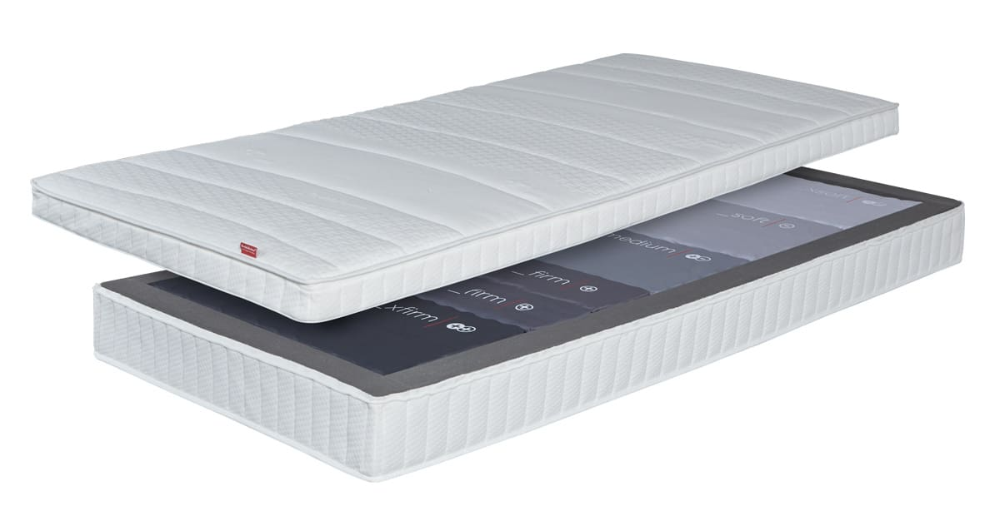

Geen showroom vol twijfel, maar één bed dat we afstellen op hoe jij écht slaapt. Je meet drie nachten thuis in je eigen bed, wij vertalen dat naar de juiste hardheid per zone.
€ 75 per slaper · volledig verrekend bij aankoop van je bed
Open je slaapdossier met de code uit je bevestigingsmail.
Wij weten door te meten. Daarom begint jouw nieuwe bed niet in de winkel, maar in je eigen slaapkamer.
Je slaapt drie nachten thuis met de SlaapID-sensor. Die legt je slaaphoudingen, bewegingen, bedklimaat en slaapritme vast.
Het SlaapID-platform vertaalt je meting naar een persoonlijk advies: hardheid per zone, tijk en kussen.
Je Beddelicious Blocks-matras heeft 10 zones met blokken van _xsoft tot _xfirm. Onze monteur stelt ze bij levering in.
Na een paar weken meet je opnieuw. Zo zie je zwart op wit wat je nieuwe bed oplevert, en stellen we zo nodig bij.
Partners slapen zelden hetzelfde. De één ligt op de zij met brede schouders, de ander op de rug en heeft het altijd warm. Daarom krijgt ieder een eigen sensor, een eigen advies en een eigen matrashelft.
Voorbeeld: links een zijligger met brede schouders, rechts een rugligger. Beweeg over een blok voor de zone.
Vijf vragen, één minuut. Je krijgt direct een eerste indicatie en hoort of een SlaapID-meting voor jou zinvol is.
Deelnemers sliepen op een Blocks-matras dat was ingesteld volgens de SlaapID-adviesmethode, en vergeleken dat met hun eigen bed.
Bronnen: onderzoek lage rugklachten · onderzoek nek- en schouderklachten

Onder de comfortlaag van het Blocks-matras liggen tien verwisselbare blokken met pocketvering. Elk blok bestaat in vijf hardheden. Zo krijgt elke zone van je lichaam precies de ondersteuning die je meting aangeeft.
Verandert er iets, zoals je gewicht, een blessure of een nieuwe slaaphouding? Dan wisselen we blokken. Je hoeft geen nieuw matras te kopen.
Ontwerp jouw bedDe ligexpert van Nijkerk en omstreken. In onze Slaapstudio staat één showbed met alle stalen, en bespreek je je meting met een slaapadviseur of slaapfysio.
Gratis parkeren voor de deur
€ 75 per slaper. Koop je daarna een Blocks-bed, dan verrekenen we het volledige bedrag. Het onderzoek is dus gratis als je bij ons koopt.
Je draagt een kleine sensor op je borst, thuis in je eigen bed. Je slaapt gewoon zoals altijd. Na drie nachten stuur je hem terug of lever je hem in bij de studio.
Nee. De SlaapID-meting kijkt naar je lighouding, bewegingen, bedklimaat en ritme. Vermoed je slaapapneu, of slaap je al langer dan drie maanden slecht? Ga dan naar je huisarts.
Je slaapdata blijft in de beveiligde database van SlaapID. Wij bewaren alleen de status van je meting, je matrasinstelling en een link naar je rapport. Daar geef je vooraf toestemming voor.
Nee, het kan helemaal online. Wil je toch stalen voelen, proefliggen of persoonlijk advies? Dan ben je van harte welkom in de studio, of we bellen of videobellen met je.